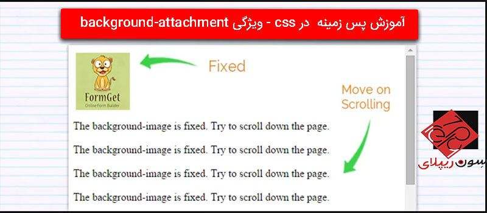
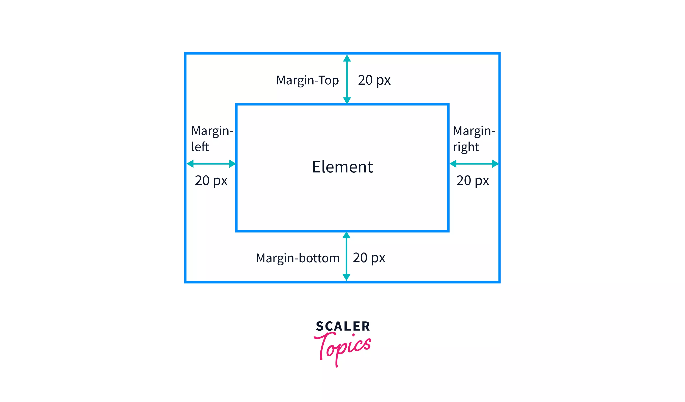
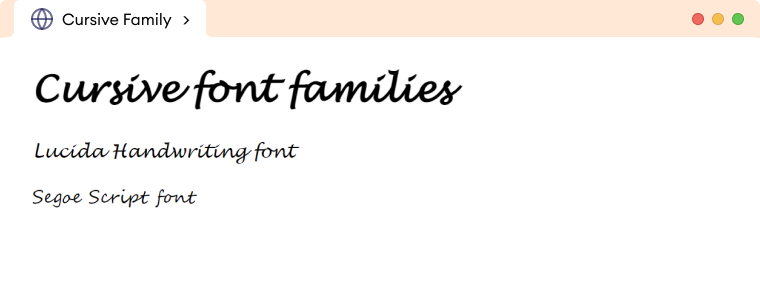
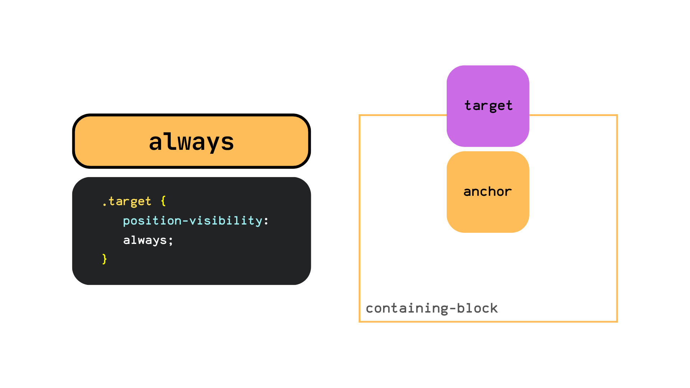
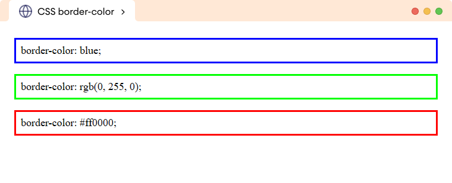
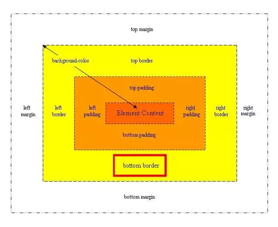
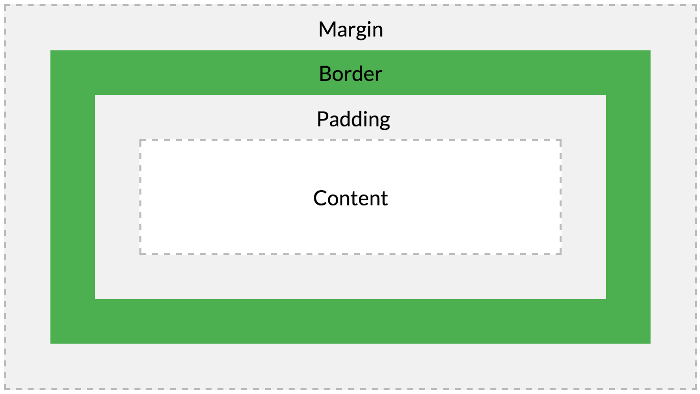

| background-attachment |
valor; |
Establece si una imagen de fondo se desplaza con el resto de la página o si es fija. |
body { background-image: url('fondo.jpg'); background-attachment: fixed; } |
scroll,fixed,local,initial,inherit; |
 |
Blog |
| margin |
margin: valor; |
Define el espacio exterior alrededor de un elemento. |
div {margin: 20px;} |
auto, longitud (px, em, rem), %, inherit |
 |
Margin |
| font-family |
font-family: fuente1 |
Define la fuente del texto del elemento |
p {font-family: 'Helvetica', sans-serif;} |
'Arial', 'Times New Roman', sans-serif, serif |
 |
Font |
| visibility |
visibility: valor; |
Controla si un elemento es visible o no, pero sigue ocupando espacio. |
span {visibility: hidden;} |
visible, hidden, collapse |
 |
Visibilidad |
| animation-delay |
animation-delay: tiempo; |
Establece el tiempo de espera antes de que comience una animación. |
div {animation-delay: 2s;} |
0s, 1s, 500ms, -2s |
 |
Animation |
| align-content |
align-content: valor; |
Alinea las líneas dentro de un contenedor flexbox o grid cuando hay espacio adicional. |
.container {display: flex;flex-wrap: wrap;align-content: center;} |
flex-start, flex-end, center, space-between, space-around, stretch |
 |
Aling |
| float |
float: valor; |
Hace que un elemento flote a la izquierda o derecha, permitiendo que el contenido lo rodee. |
img {float: right;} |
left, right, none, inherit |
 |
Float |
| border-color |
border-color: color; |
Define el color del borde de un elemento. |
div {border: 2px solid;border-color: blue;} |
red, #000, rgb(255,0,0), transparent |
 |
Border |
| bottom |
bottom: valor; |
Define la distancia desde la parte inferior del contenedor posicionador. Requiere position: relative/absolute/fixed/sticky. |
.box { position: absolute;bottom: 20px;} |
10px, 5%, auto |
 |
Botton |
| content |
content: valor; |
Inserta contenido generado en pseudoelementos (::before, ::after). |
p::after {content: " 🔔";} |
"", "texto", url(), attr(), none |
 |
Content |